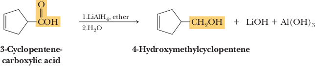
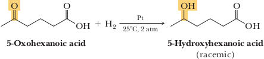
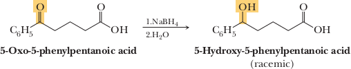

Reduction of Carboxylic acids
The carboxyl group is one of the organic functional groups most resistant to reduction. It is not affected by catalytic hydrogenation under conditions that easily reduce aldehydes and ketones to alcohols and that reduce alkenes and alkynes to alkanes. The most common reagent for the reduction of carboxylic acids to primary alcohols is the very powerful reducing agent lithium aluminum hydride.
Lithium Aluminum Hydride
Lithium aluminum hydride, LiAlH4 (LAH), reduces a carboxylic acid to a primary alcohol in excellent yield, although heating is required. LAH is usually dissolved in diethyl ether or tetrahydrofuran (THF). When carboxylic acids react with LiAlH4, the initial product is a tetraalkoxy aluminate ion, which is then treated with water to give the primary alcohol and lithium and aluminum hydroxides. These hydroxides are insoluble in diethyl ether and THF and are removed by filtration. Evaporation of the solvent then yields the primary alcohol.
Alkenes are generally not affected by metal hydride reducing agents. These reagents function as hydride ion donors, that is, as nucleophiles, and alkenes are not attacked by nucleophiles.
In the reduction of a carboxyl group by lithium aluminum hydride, the first hydride ion reacts with the carboxyl hydrogen to give H2. The resulting carboxylate anion reacts with a hydride ion at the carbonyl carbon atom, with the assistance of Li+ and Al complexes acting as Lewis acids. Following hydride reaction, departure of an oxygen atom as an aluminum oxide species produces an intermediate aldehyde. The aldehyde immediately reacts under the reaction conditions (Section 16.11A) to give a tetraalkoxy aluminate ion that hydrolyzes in an aqueous workup to yield the final product alcohol. Following are balanced equations for treatment of a carboxylic acid with LiAlH4 to form a tetraalkoxy aluminate ion, followed by its hydrolysis in water.
In the reduction of a carboxyl group, two hydrogens from LiAlH4 are delivered to the carbonyl group. The hydrogen on the hydroxyl group of the product is provided by water or by aqueous acid during work-up. The mechanism of lithium aluminum hydride reduction of carboxyl derivatives is presented in later sections for amides, nitriles.
Selective Reduction of Other Functional Groups
Because carboxyl groups are not affected by the conditions of catalytic hydrogenation, which normally reduce aldehydes, ketones, alkenes, and alkynes, it is possible to selectively reduce these functional groups to alcohols or alkanes in the presence of carboxyl groups.
We saw in Section 16.11A that both LiAlH4 and NaBH4 reduce aldehydes and ketones to alcohols. Only LiAlH4, however, reduces carboxyl groups. Thus, it is possible to reduce an aldehyde or ketone carbonyl group selectively in the presence of a carboxyl group by using the less reactive NaBH4 as the reducing agent. An example is the selective reduction of the following ketoacid to a hydroxyacid.
